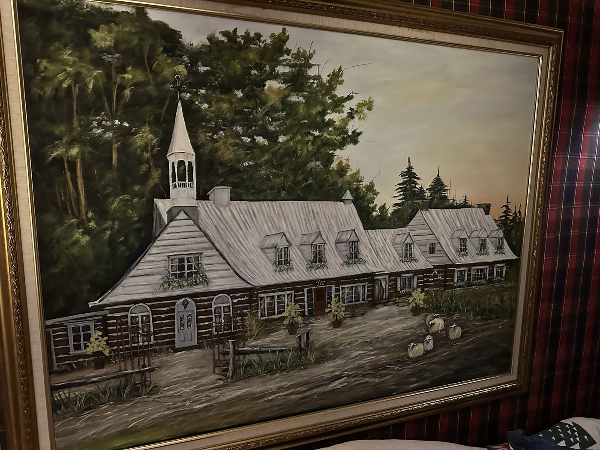

Built for quiet, kept that wayBâtie pour le silence, et restée ainsi
Before it welcomed travellers, this long log house at 216, avenue de l'Église was a monastery. Avant d'accueillir des voyageurs, cette longue maison de bois au 216, avenue de l'Église était un monastère.
It stands at the top of the Mont-Horeb road, among an orchard and hundred-year-old maples, with the whole Saint-Sauveur valley laid out below. The squared logs, the steep tin roof and its row of dormers, and the little steeple that gives the house its name are all still here. Elle se dresse au sommet du chemin du Mont-Horeb, entre un verger et des érables centenaires, avec toute la vallée de Saint-Sauveur à ses pieds. Les pièces de bois équarries, le toit de tôle et sa rangée de lucarnes, et le petit clocher qui donne son nom à la maison sont toujours là.
Today it is an ancestral home turned gîte. Guests call it a small museum you are allowed to sleep in, and they are not far off. C'est aujourd'hui une maison ancestrale devenue gîte. Les invités en parlent comme d'un petit musée où l'on a le droit de dormir, et ils n'ont pas tort.
